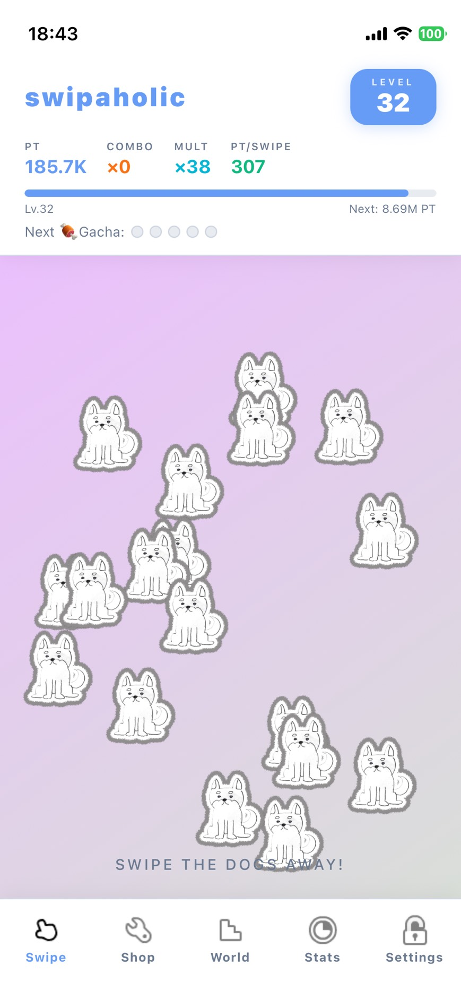

We will soon release a casual game called Swipaholic—a simple experience where you just keep swiping.
At first glance, it may look like a mindless game you play without thinking. But behind it, there is a deeply personal story.
For most of my life, I had little interest in animals. They felt distant, almost unrelated to my world.
That changed when I met my partner.
I learned that my partner had grown up alongside animals—especially dogs—sharing both joy and hardship, and even experiencing the pain of losing something truly precious.
Hearing those stories moved me in a way I had never experienced before.
I want to share that feeling with people who, like my past self, have never really connected with animals.
That is why we are creating this app.
Each month, we will set a global swipe goal based on the number of users around the world.
When that goal is achieved, a portion of the app’s revenue will be donated to animal welfare organizations.
This is our way of giving back to the animals—especially the dogs—that supported my partner through life.
Swipaholic
Swipe. Play. Give back.

Play for fun. Swipe for a reason.